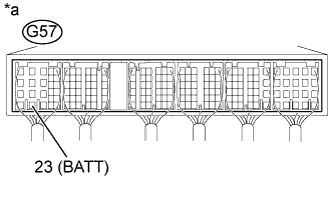

DTC P0560 Напряжение бортовой сети |
| Режим поездки при обнаружении DTC | Условие обнаружения DTC | Неисправный участок |
| Зажигание включено (IG) в течение 3 с | Напряжение на контакте BATT падает ниже допустимого уровня в течение 3 с, и часть сохраненных значений в ECM инициализируется (логика диагностирования за 1 поездку). |
|
| № DTC | Параметры из Data List |
| P0560 | Battery Voltage* |
| 1.ПРОВЕРЬТЕ НАПРЯЖЕНИЕ НА КОНТАКТЕ ECM (BATT) |
|  |
Отсоедините разъем ЭБУ.
Измерьте напряжение в соответствии со значениями, приведенными в таблице.
| Контакты для подключения диагностического прибора | Состояние | Заданные условия |
| G57-23 (BATT) – масса | Всегда | 11 - 14 В |
| *a | Устройство с подсоединенным жгутом проводов (ECM) |
Подсоедините разъем ECM.
|
| ||||
| OK | |
| 2.ПРОВЕРЬТЕ АККУМУЛЯТОРНУЮ БАТАРЕЮ |
Удостоверьтесь, что аккумуляторная батарея не разряжена.
|
| ||||
| OK | |
| 3.ПРОВЕРЬТЕ ВЫВОДЫ АККУМУЛЯТОРНОЙ БАТАРЕИ |
Убедитесь, что выводы аккумуляторной батареи надежно закреплены и не покрыты окисной пленкой.
|
| ||||
| OK | |
| 4.ПРОВЕРЬТЕ, ВЫВОДИТСЯ ЛИ КОД DTC СНОВА |
Подсоедините портативный диагностический прибор к DLC3.
Включите зажигание (IG) и портативный диагностический прибор.
Сбросьте коды DTC (Нажмите здесь).
Выключите зажигание.
Включите зажигание (IG) на 3 с.
Войдите в следующие меню: Powertrain / Engine and ECT / DTC.
Считайте коды DTC.
| Результат | Следующий шаг |
| P0560 выводится | А |
| Коды DTC не выводятся | B |
|
| ||||
| А | |
| 5.ЗАМЕНИТЕ ECM |
Замените ECM (Нажмите здесь).
|
| ||||
| 6.ОТРЕМОНТИРУЙТЕ ИЛИ ЗАМЕНИТЕ ЖГУТ ПРОВОДОВ ИЛИ РАЗЪЕМ |
Отремонтируйте или замените жгут проводов или разъем.
|
| ||||
| 7.ЗАРЯДИТЕ ИЛИ ЗАМЕНИТЕ АККУМУЛЯТОРНУЮ БАТАРЕЮ |
Зарядите или замените аккумуляторную батарею.
|
| ||||
| 8.ОТРЕМОНТИРУЙТЕ ИЛИ ЗАМЕНИТЕ ВЫВОДЫ АККУМУЛЯТОРНОЙ БАТАРЕИ |
Отремонтируйте или замените вывод аккумуляторной батареи.
| ДАЛЕЕ | |
| 9.ПРОВЕРЬТЕ, УСТРАНЕНА ЛИ ДОЛЖНЫМ ОБРАЗОМ НЕИСПРАВНОСТЬ |
Подсоедините портативный диагностический прибор к DLC3.
Сбросьте коды DTC (Нажмите здесь).
Выключите зажигание и подождите не менее 30 с.
Включите зажигание (IG) на 3 с.
Войдите в следующие меню: Powertrain / Engine and ECT / DTC.
Убедитесь, что DTC не выводится снова.
| ДАЛЕЕ | ||
| ||